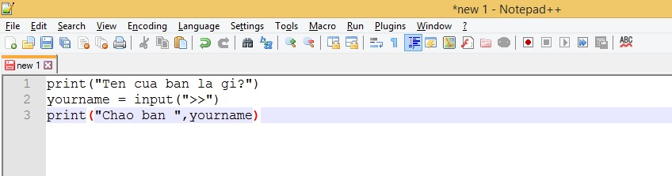
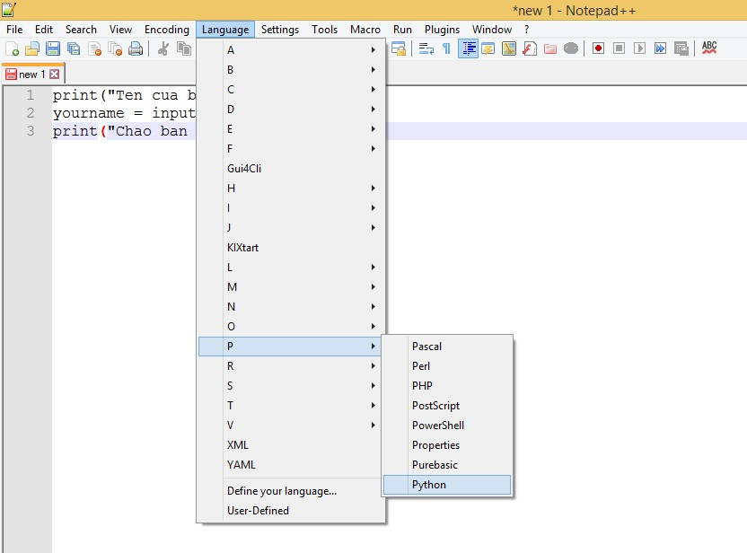
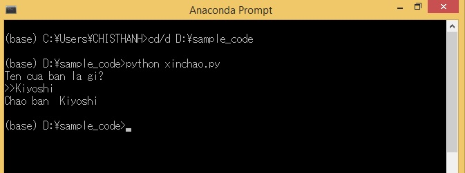

Let’s learn How to write python programs , save and run python programs in today’s lesson. You will know how to choose software to write python code , how to write a python program , how to save a python file as well as how to run a python program in this article.
Software to write python code
We can write python code with most popular coding software today such as Notepad ++ , Sublime Text , or Visual Studio - Microsoft . If you don’t have these software installed on your computer, you can even use the simplest python coding software , which called Notepad - text editing software available in windows. Kiyoshi often uses Notepadd ++ software to write python code, so within this website I will guide you to write python code with Notepad ++ software.
You can download this software at https://notepad-plus-plus.org .
Alternatively, you can also use the following coding programs:
- Sublime Text: free python code writing software, download at https://www.sublimetext.com/3
Visual Studio - Microsoft: free python coding software for free, download at Microsoft visualstudio - Pycharm: paid python coding software, download at https://www.jetbrains.com/pycharm-edu/
- For those in Japan, you can use Sakura editor’s free python coding software , download at https://sakura-editor.github.io/download.html
How to write python program
In python, you will write python program by editing on python code and save this python file with .py file extension . You can then run the python program that is saved in this python file, or edit it as many times as you like.
Here let’s see the python program writing process with python Notepad ++ coding software .
Start software to write python code and write python program.
First of all, start the python Notepad ++ code writing software, then you will write the program’s command lines directly into the image of this software. As an example, we will enter the lines of code of a simple python program below into the screen of Notepad ++
print ( "What's your name?" ) |
Code explanation:
- Line 1: Use the print function to print a single line of text What is your name? screen
- Line 2: Use the input function to assign the value entered from the keyboard to the variable yourname
- Line 3: Use the print function to print the program result to the screen.
The Notepad ++ screen will look like this:
Set the programming language to be used in the program
When you write the above lines of code in Notepad ++ , Notepad ++ still does not know where the programming language you are using is python, so the auto color correction function makes it easier to compose Notepad ++. has not been activated. Therefore, you must set the programming language to use in the program to be python in one of the two ways below:
- Method 1: Click Language> P> Python
- Method 2: Press Alt + L> P> Python

At that time, Notepad ++ will automatically change the text color to help you distinguish the commands more easily as shown below:
Save the python file with the .py file extension
After writing the command lines of the python program into the editing screen of the python coding software , we will save the python file with the .py file extension to run the python program written in this file, or save hold the program for later editing.
The saved file will have a file name like this:
filename.py
For example, we will save the python file just written above with the name xinchao.py. The way to save the python file in Notepad ++ is as follows:
-Click on File> Save, then type xinchao.py in the Filename box.
-Choose the file format as Python file (.py: .pyw) in the Save as type box.
-Choose where to save the file by selecting the path in the Save in box. In this example, let’s say you save the file to folder D: \ sample_code \ xinchao.py.
-Finally click Save to finish saving the file.

How to run python program is written in python file
After saving the python file, we will have various ways to run the python program written in this file. One of the most common is to run the python program written in the file on the Anaconda Prompt or on the Command Prompt.
However, no matter what platform you run the python program written in the python file, the syntax to run the python program will be as follows:
python filename
We write python, then the space , and then the python file name as above.
Take for example the Anaconda Prompt. Start the Anaconda Prompt, then enter the lines of code in turn, press ENTER to run them as below:
d/d D:\sample_code |
Explanation Code:
-Line cd/d D:\sample_codeis to move to the folder containing the file python xinchao.py. -The
line python xinchao.pyis to run the python xinchao.py file.
Then the python file is processed, and the result of the python program written in it appears as below screen:

In short to run a python file, you need to do two things:
- Move to the folder containing the python file with syntax cd / d-folder-path
- Run that python file with syntax python filename.py
Summary
Above, Kiyoshi showed you how to write python program, save and run python program. To better understand the lesson content, practice rewriting today’s examples.
And let’s learn more about Python in the next lessons.
HOME>> python for beginners>>basic knowledge of python programming